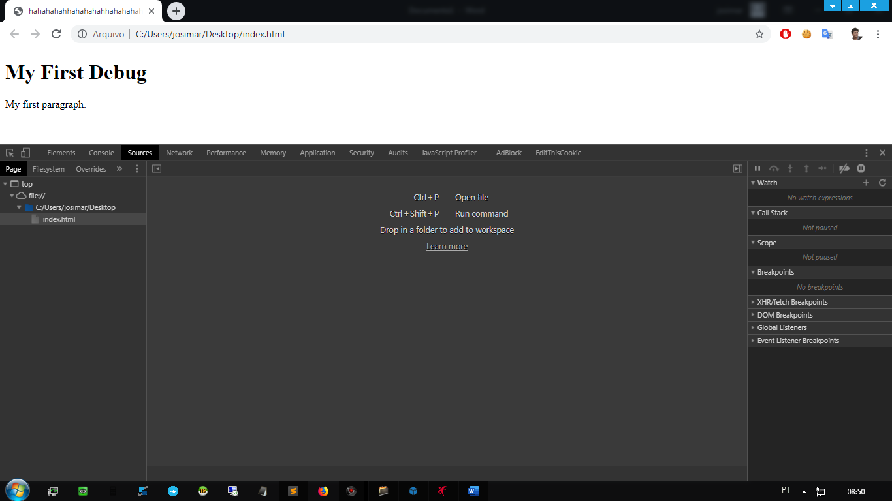
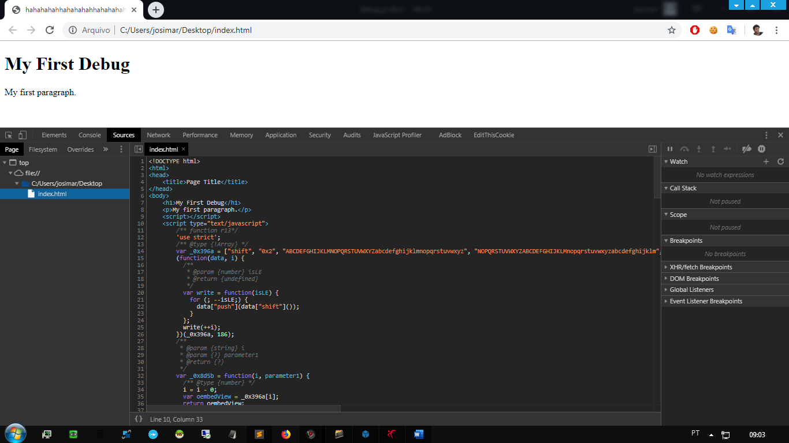
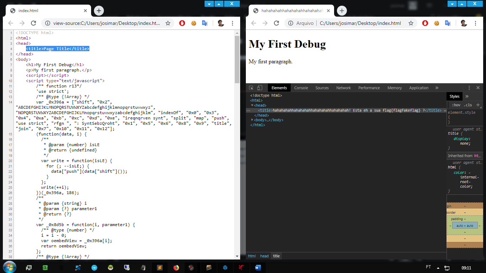
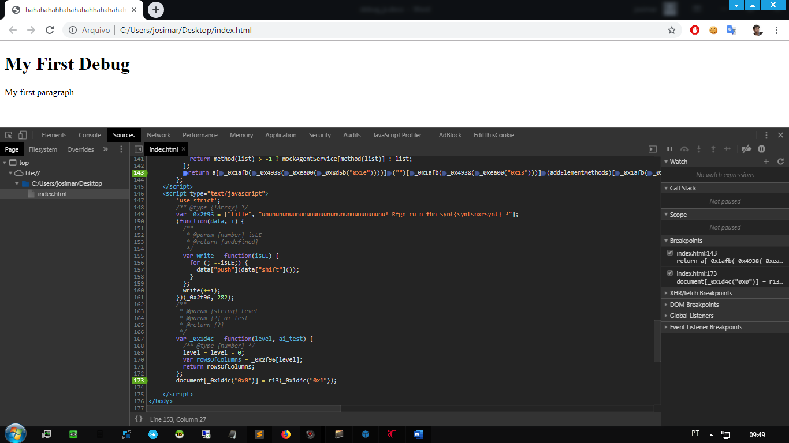
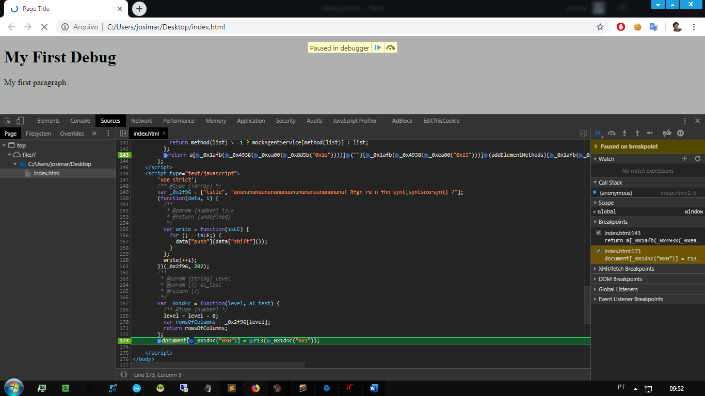
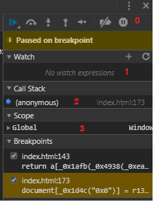
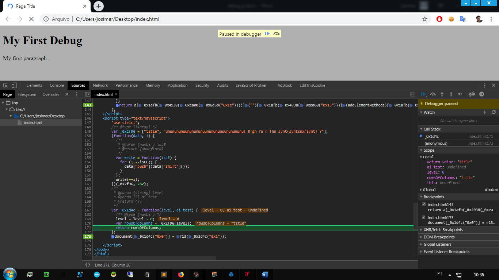
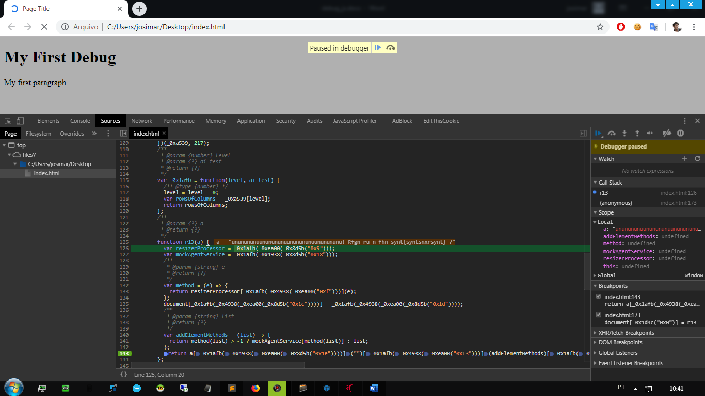
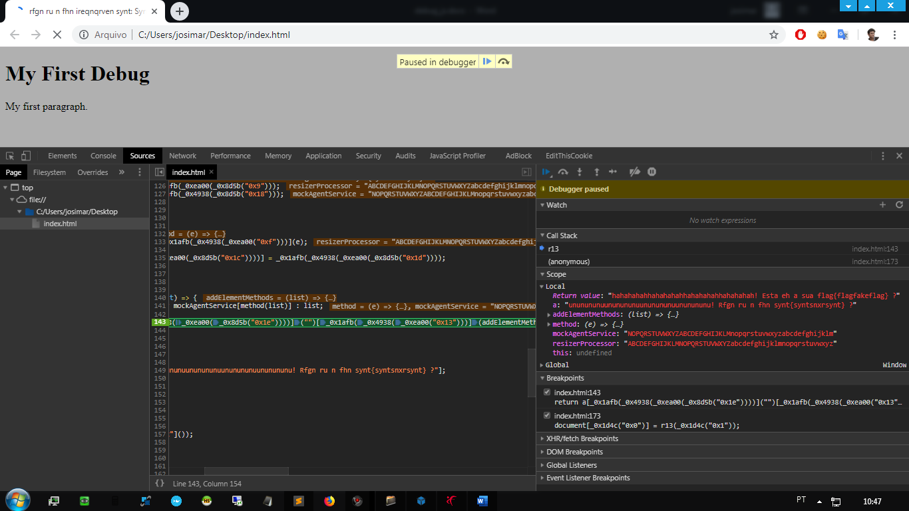

Olá pessoal!
Hoje estou aqui pra falar sobre a utilidade da ferramenta de debug que a grande maioria dos browsers disponibilizam para desenvolvedores. Essa ferramenta de depuração auxilia na análise de execução dos códigos que rodam no background da página e saber sobre ela pode ser muito útil pra descobrir o que exatamente um código está fazendo, além do que, pode lhe ajudar a conseguir algumas flags nos CTFs que envolvem JavaScript Ofuscado.
Estarei usando o Google Chrome como browser para mostrar o básico do debugger, pois o conteúdo em seu total é muito extenso, mas caso se interesse no assunto, a Google disponibiliza de fácil acesso seus manuais.
Então...vamos lá!
Para ter acesso ao debugger:

Feito isso você chegara nesse ponto da imagem acima e claramente é possível perceber que a janela é dividida e 3 partes.
Se olharmos primeiramente para a Zona de Recursos nota-se um index.html, e é o conteúdo desse arquivo que irei usar para exemplificar algumas funções da zona de Informações e controle.

Após selecionar o index.html o conteúdo do mesmo é carregado na zona de origem e já podemos ver o seu código fonte, e é fácil perceber que há um código javascript e que o mesmo possui duas funções separadas, cada um dentro de suas tags <script>, porem ao carregar a página não é possível perceber nenhuma execução de código.
Mas será mesmo que nada está executando?
Para sabermos isso vamos olhar o código fonte estático (Ctrl+u) e compara-lo ao código dinâmico da guia Elements.

Na imagem acima é possível perceber a diferença entre o código fonte estático e o dinâmico na guia Elements, apenas olhando para a tag html <title>, ou seja...o javascript contido na index.html está alterando rapidamente o título da página dinamicamente.
Para vermos como isso acontece, vamos utilizar os breakpoints, que é um recurso da zona de origem e que após inserido o breakpoint ele irá aparecer também na zona de Informações e controle. E para inserirmos isso, basta ir na zona de origem e clicar no numero da linha desejada e pronto, breakpoint inserido. E você pode inserir quantos breakpoints achar necessário.
Eu estarei inserindo dois, sendo um em cada termino de função.

É fácil notar agora na imagem acima que a linha marcada na zona de origem ganha um realce de cor e que a agora na zona de Informações e controle aparece o breakpoint listado.
Recarregando a página F5 agora o código irá para no primeiro breakpoint que encontrar, seguindo o fluxo de execução do código. Que nesse caso é o breakpoint da segunda função.

Agora nessa parte vamos precisar saber um pouco mais sobre a zona de Informações e controle, pois nela tem recursos para navegamos e seguirmos o fluxo de execução do código.
A zona de Informações e controle é dividida em várias partes, mas irei abordar apenas algumas delas, pois estas serão as necessárias para demonstração básica do uso do debugger.

A primeira que irei falar é a parte 0, que é a parte dos controles de rastreamento, que são:
A execução seria interrompida na última linha da função atual. Isso é útil quando acidentalmente inserimos uma chamada aninhada usando , mas isso não nos interessa, e queremos continuar até o fim o mais rápido possível.
Quando ativado e as ferramentas do desenvolvedor estão abertas, um erro de script pausa automaticamente a execução. Então podemos analisar variáveis para ver o que deu errado. Então, se nosso script morre com um erro, podemos abrir o depurador, ativar essa opção e recarregar a página para ver onde ela morre e qual é o contexto naquele momento.
Agora vou falar das partes de 1 a 3 :
Você pode clicar no sinal de mais + e inserir uma expressão. O depurador mostrará seu valor a qualquer momento, automaticamente recalculando-o no processo de execução.
No momento atual, o depurador está dentro da segunda função da index.html (sem função, portanto, é chamado de "anônimo").
Se você clicar em um item de pilha (por exemplo, “anônimo”), o depurador vai para o código correspondente, e todas as suas variáveis também podem ser examinadas.
Local mostra variáveis de função locais. Você também pode ver seus valores destacados diretamente sobre a origem.
Global tem variáveis globais (fora de qualquer função).
Agora que já sabemos os comandos básicos para controlar o fluxo de execução, vamos dar seguimento.

Dando seguimento passo a passo é possível perceber na imagem acima que, em determinado ponto da segunda função (que está ofuscada), é passado um valor title,

e seguidamente uma string para a primeira função chamada de r13 que nada mais é que a função rot13 (Rotaciona 13 posições pra cada caractere passado), e é nessa função que feita a decodificação da string que se será o novo título da página.

E assim, com muita paciência e calma é possível analisar, entender e ver toda a execução do código sendo realizada na página, percebendo-se que são executadas duas funções, sendo que a segunda função chama a primeira para decodificar a string que será inserida no title por ela.
Não pretendo fazer aqui uma análise mais detalhada, pois a minha ideia com esse post é apenas lhe apresentar essa poderosa ferramenta presente na maioria dos navegadores atuais e dessa forma lhe incentivar a buscar aprender mais sobre o assunto. Porém não terminamos ainda, pois esse código oferece mais um segredinho que deixarei pra você desvendar.
Que a sua curiosidade seja seu guia, ok?
Desde de já agradeço pela atenção de quem ficou até o final desse conteúdo.
“E que a força esteja com você!”